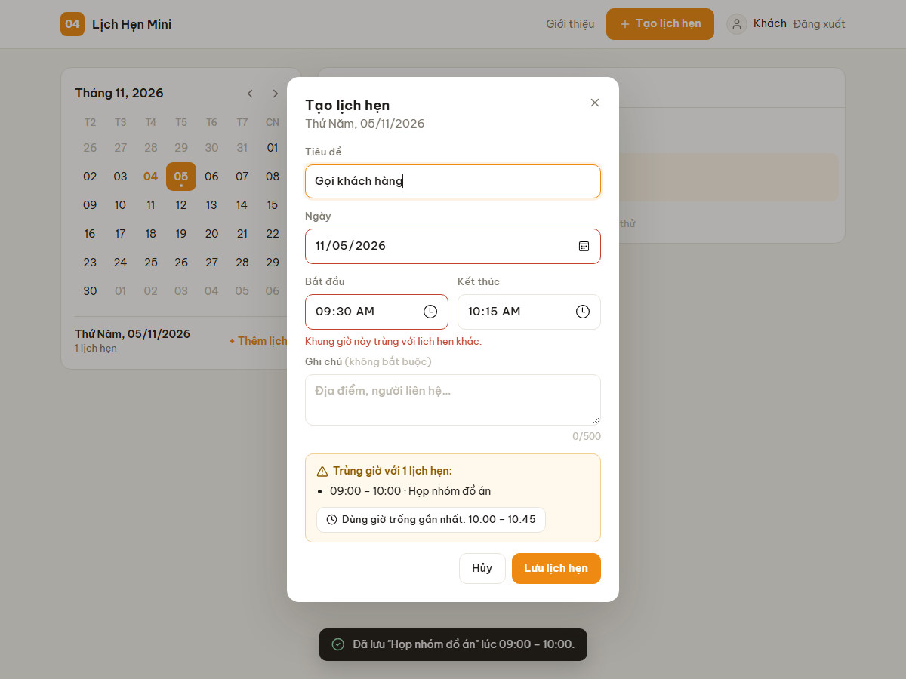
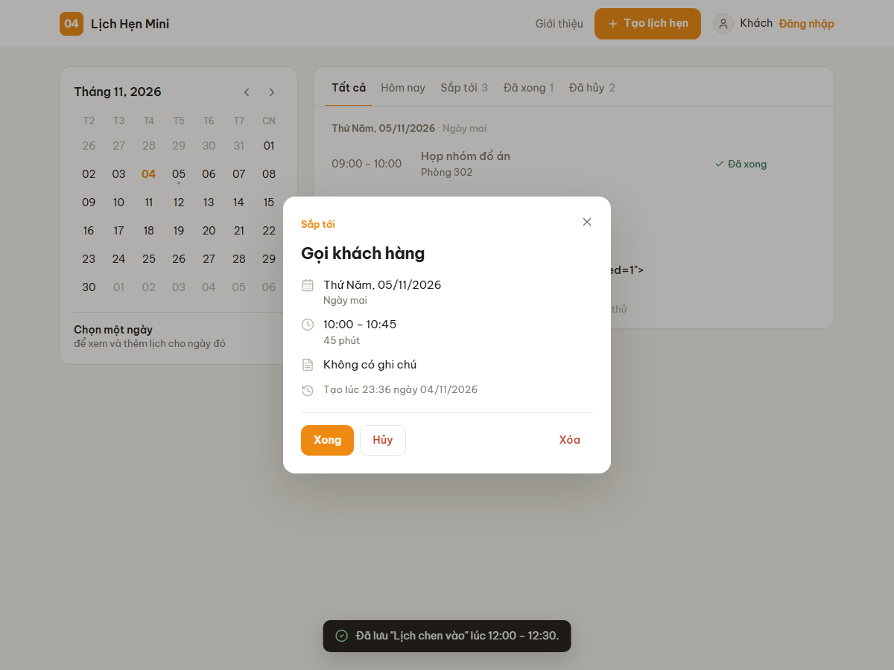
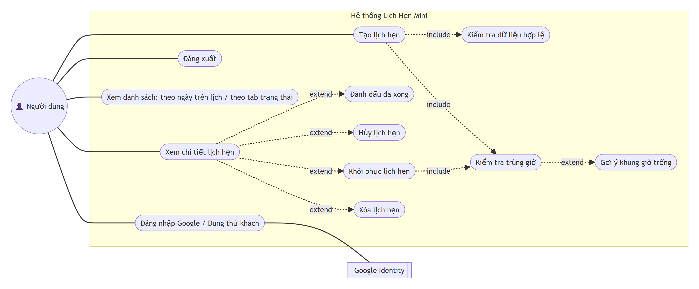
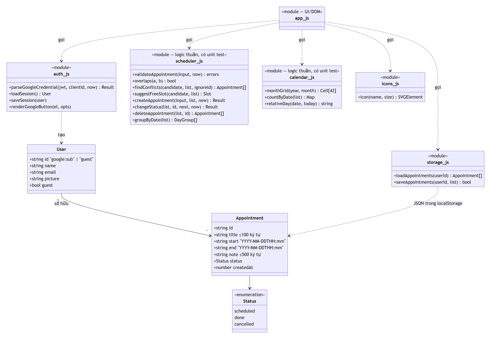
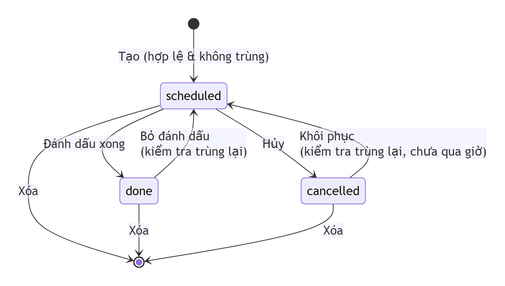
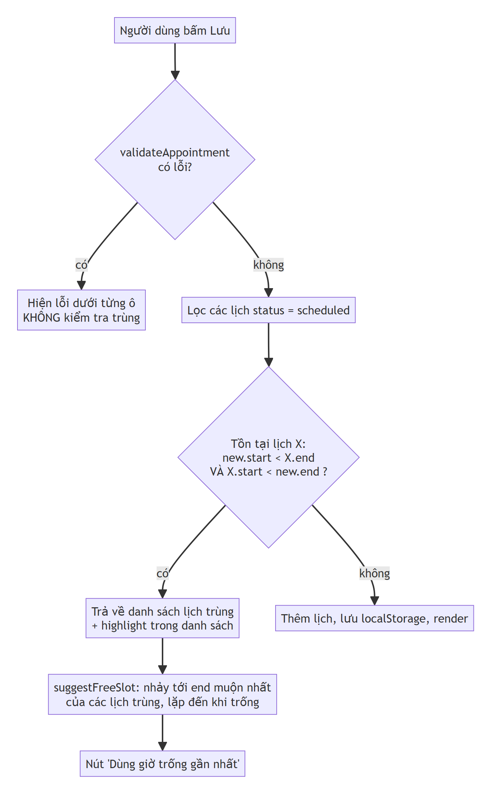

Đặt lịch hẹn,
không lo trùng giờ.
Lịch Hẹn Mini giúp bạn ghi lại lịch hẹn cá nhân trong vài giây. Khi giờ mới chồng lên một lịch đã có, ứng dụng chặn lại, chỉ ra lịch đang chiếm giờ và gợi ý khung trống gần nhất.
- Chặn mọi kiểu chồng giờ, cho phép lịch nối tiếp nhau
- Gợi ý giờ trống chỉ với một lần bấm
- Lịch tháng, lọc theo ngày và trạng thái

Vấn đề
Lịch hẹn cá nhân thường được ghi rải rác: giấy, tin nhắn, ghi chú điện thoại. Vì vậy rất dễ hẹn hai việc vào cùng một giờ mà không biết, cho tới khi đã muộn. Các ứng dụng lịch lớn thì nặng so với nhu cầu cá nhân và mặc định vẫn cho tạo sự kiện chồng giờ.
Lịch Hẹn Mini tập trung vào đúng một việc: ghi lịch hẹn nhanh và không cho phép hai lịch chồng lên nhau.
Cách hoạt động
- Tạo lịch hẹn. Bấm "Tạo lịch hẹn", hoặc chọn một ngày trên lịch tháng rồi bấm "+ Thêm lịch". Ngày và khung trống 30 phút đầu tiên trong ngày được điền sẵn.
- Kiểm tra dữ liệu. Thiếu tiêu đề, giờ kết thúc trước giờ bắt đầu, lịch trong quá khứ, ngày không tồn tại… đều báo lỗi ngay dưới ô nhập.
- Kiểm tra trùng giờ. Không trùng thì lưu. Trùng thì không lưu, liệt kê lịch đang chiếm giờ, tô vàng nó trong danh sách và đề xuất giờ trống gần nhất.
- Theo dõi. Danh sách nhóm theo ngày; lọc Hôm nay / Sắp tới / Đã xong / Đã hủy. Bấm vào một lịch để xem chi tiết, đánh dấu xong, hủy, khôi phục hoặc xóa.


Kiểm tra trùng giờ
Mỗi lịch là một khoảng thời gian nửa mở [bắt đầu, kết thúc). Hai lịch trùng nhau khi và chỉ khi:
bắt_đầu₁ < kết_thúc₂ và bắt_đầu₂ < kết_thúc₁
Một điều kiện này bao trọn mọi kiểu chồng giờ, và lịch nối tiếp nhau không bị coi là trùng. Ví dụ với lịch có sẵn 09:00–10:00:
Các trường hợp khó đã xử lý
- Khôi phục lịch đã hủy: hủy A → đặt B vào đúng giờ đó → khôi phục A. Nếu không kiểm tra lại thì A và B sẽ trùng, nên mỗi lần đưa một lịch về "sắp tới" đều kiểm tra trùng lại.
- Chỉ lịch đang hoạt động mới giữ chỗ: lịch đã hủy hoặc đã xong không chặn khung giờ.
- Ngày không tồn tại như 30/02: JavaScript tự "lăn" sang 02/03, nên ứng dụng kiểm tra lại từng thành phần ngày giờ.
- Gợi ý giờ trống nhảy qua cả chuỗi lịch liền nhau; lịch qua nửa đêm vẫn so sánh đúng.
Use case

| Đăng nhập Google / dùng thử | Mỗi tài khoản thấy danh sách lịch riêng; chế độ khách để dùng thử nhanh. |
| Tạo lịch hẹn | Luôn đi kèm kiểm tra dữ liệu và kiểm tra trùng giờ; nếu trùng thì gợi ý khung giờ trống. |
| Xem danh sách | Theo ngày chọn trên lịch tháng, hoặc theo tab trạng thái. |
| Xem chi tiết | Trạng thái, ngày, giờ, thời lượng, ghi chú; từ đây đánh dấu xong, hủy, khôi phục, xóa. |
| Khôi phục lịch đã hủy | Phải kiểm tra trùng giờ lại trước khi khôi phục. |
Thiết kế
Hai thực thể: User (Google hoặc khách) và Appointment. Logic nghiệp vụ tách thành module thuần, không phụ thuộc giao diện, để kiểm thử tự động được.



Công nghệ
| HTML, CSS, JavaScript thuần | Một màn hình chính, không cần framework hay bước build. |
| localStorage | Dùng cá nhân, không cần server, chạy được offline. Lớp lưu trữ tách riêng để dễ thay sau này. |
| Google Identity Services | Đăng nhập Google ngay trên trình duyệt, không phải dựng backend. |
| node:test | Công cụ test có sẵn trong Node.js, không cài thêm thư viện. |
| Vercel, GitHub Actions | Deploy miễn phí, tự động; test chạy lại mỗi lần đẩy code. |
Kiểm thử
Phạm vi
Chủ động không làm để luồng chính chạy trọn vẹn trong 1 tuần:
- Gửi email nhắc hẹn, tích hợp Google Calendar (đề bài ghi rõ không cần).
- Đồng bộ nhiều thiết bị: dữ liệu nằm trên trình duyệt, muốn đồng bộ phải có backend.
- Sửa lịch đã tạo (hiện xóa rồi tạo lại), lịch lặp lại, chia sẻ lịch, xem tuần dạng lưới.
Tự đánh giá
Điểm mạnh
- Quy tắc trùng giờ rõ ràng, có test cho từng quy tắc.
- Xử lý được trường hợp khôi phục lịch khi giờ đã bị chiếm.
- Không chỉ báo lỗi mà còn gợi ý giờ trống.
Điểm yếu
- Dữ liệu chỉ nằm trên một trình duyệt.
- Chưa sửa được lịch, chưa xuất/nhập dữ liệu.
- Đăng nhập chỉ để tách dữ liệu, không phải cơ chế bảo mật.
Nếu có thêm 1 tuần
Thêm sửa lịch hẹn; xuất/nhập .ics; backend để đồng bộ nhiều thiết bị; xem tuần dạng lưới, kéo thả đổi giờ.
Bài học
- Làm rõ đề trước khi code: "ngày giờ" phải là một khoảng thì mới kiểm tra trùng được.
- Test trường hợp biên giúp phát hiện lỗi thiết kế (khôi phục lịch gây trùng).
- Tính năng có vẻ quá lớn thì tìm phiên bản tối thiểu trước khi cắt (đăng nhập Google không cần backend).
Thử ngay
Không cần cài đặt. Dùng thử ở chế độ khách hoặc đăng nhập bằng Google.